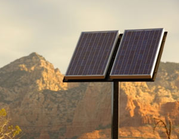

Wherever there’s sunlight, you can take advantage of solar energy. However, different places have different solar resources, so the same set of photovoltaic (PV) panels will produce much more electricity in some locations than in others.
Many factors make a difference in how much electricity a PV system can produce at any one time - including constantly changing factors such as time of day, season and weather, but also geographic traits such as climate and latitude. In general, areas closer to the equator have far greater potential for producing solar electricity than those closer to the poles, and areas with consistent sun have greater solar potential then areas that are frequently overcast.
As a whole, the United States has terrific solar resources. For perspective, check out this map of global solar radiation from the United Nations Environment Programme. Now consider that Germany and Spain lead the world in installed PV power. The United States is currently third in installed PV power worldwide, but has far greater natural solar resources than either Spain or Germany.
But while the United States has strong solar potential across the country, some states are definitely sunnier than others. Here’s how you can find out which states have the best natural solar resources, and which have policies that support the development of solar power.
For the absolute best solar resources in the United States, think southwest.
Take a look at this solar resources map from the National Renewable Energy Laboratory (NREL). Based on this map, New Mexico and Arizona are red hot with solar potential, and California, Nevada, Texas, Utah and Colorado also have large areas highly favorable for PV development. PV systems will generate more electricity in these spots - and therefore earn more money - than PV panels in areas with fewer natural solar resources.
Both this U.S. map and the global map mentioned above use a common measurement of solar irradiation, which is kwh/m2/day, also known as peak sun hours. Here’s more information about peak sun hours and how you can calculate them for your location using the PV Watts1 website.
For yet another look at solar resources state-by-state, check out the U.S. Energy Information Administration (EIA) state energy profiles. This is a set of maps and energy profiles of all 50 states. Any areas with above six peak sun hours per day are shaded on the maps to indicate that they are good sites to consider for future solar projects.
Incentives for installing solar power vary widely across the United States. While some incentives are available from the federal government (including a federal tax credit of 30 percent for residential solar-electric systems) many other incentives are offered on the state level.
The best place to find all the details about renewable energy incentives is the Database of State Incentives for Renewables and Efficiency (DSIRE). Here’s a state-by-state list of all PV incentives, including those for large commercial projects as well as those available to homeowners.
But looking specifically at incentives for homeowners, which states offer the most support for solar energy? For a quick visual comparison, check out this helpful map from FindSolar.org and Cooler Planet. It compares the costs and financial benefits of installing a PV system from state to state, factoring in rebates, tax incentives and the price paid for electricity. (You can find more details about exactly how this number is calculated at the link above.)
Here are their top 10 states with the highest Solar Power Ratings:
So here’s a quick pop quiz: When it comes to total installed solar power, one state is definitely leading the pack. Any idea which one?
To find out, we can take a look at this report from the Interstate Renewable Energy Council (IREC) - it shows which states had installed the most megawatts of grid-connected PV power through 2008. These numbers include both home-scale systems and larger, non-residential systems. There’s much more detail in the report about exactly how those numbers break down, but here are the top 10 states with the most installed PV systems:
Yep, California is No. 1 on this list, and it’s far ahead of any of the others. According to this report, California has 528 megawatts of installed solar power, New Jersey, the next closest state has only 70. So let’s take a closer look at California. This state is definitely in a naturally sunny part of the country. It also has strong solar incentives, although you wouldn’t notice that from the Cooler Planet Solar Power Rating (it comes in just under the radar at No. 11).
If you’re a California resident, there are considerable online resources available at the Go Solar California website. But even if you’re not located anywhere near the West Coast, take a glance at this map of solar installations in San Francisco. You can check out the site’s case studies, or just take a moment to drool with envy at the uncommonly large number of PV systems.
If you’re considering installing solar panels at your home, there are many online resources where you can find more information. Here are a few to get you started. And to learn more about renewable energy where you live, check out our recent article The Best States for Wind Power.
From Mother Earth News:
Additional Resources:
|
 ISTOCKPHOTO/ THOMAS POLEN A PV array in Arizona - one of the best places in the United States for generating solar power. |
|
|